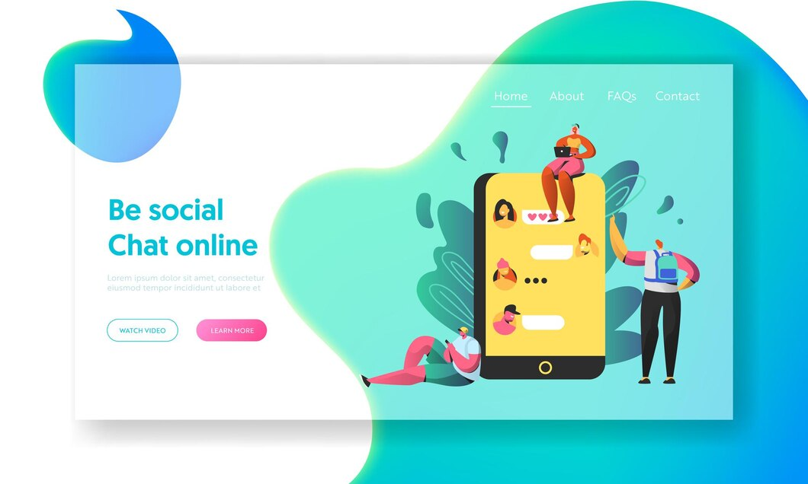

| Front End Development |
1
- Responsive Portfolio Website
- E-commerce Website Redesign
- Real-time Chat Application
|
2
-

-

-

|
3
-
Overview:
For this project, I developed a responsive portfolio
website to showcase my personal and professional projects.
The objective was to create an aesthetically pleasing
website that adapted seamlessly to various devices and
screen sizes.
Requirements:
To meet the requirements, I implemented a clean and modern
design with sections for project showcases, about me,
contact information, and resume download. I ensured
responsiveness using media queries and a mobile-first
approach. I also incorporated smooth navigation and
interactive elements for user engagement.
Technologies:
To accomplish this, I used HTML5, CSS3 (including Flexbox
or Grid for layout, media queries for responsiveness), and
JavaScript for interactivity. I also used Bootstrap, a
front-end framework, for quicker development. I am proud
of the final product and the skills I developed in web
development and design during this project.
-
Overview:
For this project, I redesigned an existing e-commerce
website to enhance the user experience and increase
conversion rates. The main focus was on improving
usability, visual appeal, and performance.
Requirements:
To meet the requirements, I revamped the website layout,
optimized product pages, and streamlined the checkout
process. I implemented intuitive navigation, product
filtering, and a responsive design. I also ensured fast
loading times and a seamless user interface.
Technologies:
To accomplish this, I used HTML5, CSS3 (leveraging SASS
for styling and responsive design), and JavaScript
(utilizing either jQuery or vanilla JS for interactivity).
Additionally, I incorporated React.js or Vue.js to create
enhanced user interfaces. I am proud of the outcome of
this project and the positive impact it has had on the
website's usability and conversion rates.
-
Overview:
For this project, I developed a real-time chat application
that allowed users to communicate instantly. The main goal
was to create a dynamic and responsive platform that
facilitated real-time messaging.
Requirements:
To meet the requirements, I implemented a user
authentication system, real-time messaging functionality,
and a user-friendly interface. I ensured responsiveness
for both web and mobile devices. Additionally, I enabled
features such as message history, online status, and
message notifications.
Technologies:
To accomplish this, I used HTML5, CSS3 for styling and
layout, and JavaScript. I utilized frameworks like
Socket.io for real-time communication. Moreover, I
leveraged React.js or Vue.js to build interactive
components. I am pleased with the outcome of this project
and how it provided users with a seamless and engaging
chat experience.
|
4
|
| Software Development-Full Stack |
1
- E-Health Record System
- Crowdfunding Platform
- Real-time Collaboration Tool
|
2
-

-

-

|
3
-
Overview:
For this project, I developed an E-Health Record System
aimed at digitizing patient records, facilitating
appointments, and streamlining healthcare processes. The
goal was to create a system that allowed patients to
schedule appointments, view their medical history, and
enabled doctors to access patient records efficiently.
Requirements:
To meet the requirements, I implemented user
authentication, a database for storing patient records,
appointment scheduling functionality, a user-friendly
interface, and a secure data encryption mechanism. I
ensured that the system complied with HIPAA regulations to
protect patient privacy.
Technologies:
For the front-end, I used HTML5, CSS3, and JavaScript with
either React.js or Vue.js. As for the backend, I utilized
technologies such as Node.js or Python (Django or Flask)
for the server, and MongoDB or PostgreSQL for the
database. I am proud of the outcome of this project as it
significantly improved the efficiency and accessibility of
healthcare processes while ensuring the security and
privacy of patient data.
-
Overview:
For this project, I created a reward-based online
crowdfunding platform that enabled individuals or
organizations to raise funds for their projects. The main
goal was to develop a user-friendly platform that allowed
users to create campaigns, make contributions, and receive
rewards based on their donation levels.
Requirements:
To meet the requirements, I developed a user-friendly
interface with user registration, campaign creation,
payment processing, and reward distribution functionality.
I also ensured secure payment transactions to protect
users' financial information.
Technologies:
For front-end development, I used HTML5, CSS3, and
JavaScript. As for server-side logic, I employed a
back-end language such as PHP, Python (Django), or Ruby on
Rails. Finally, for the database, I used MySQL or
PostgreSQL. I am satisfied with the outcome of this
project as it provided users with a reliable and efficient
way to raise funds for their projects while ensuring a
visually appealing and secure platform.
-
Overview:
For this project, I built a real-time collaboration tool
that allowed multiple users to work simultaneously on
documents or projects. The main objective was to create a
platform that supported live editing, commenting, and
version control.
Requirements:
To meet the requirements, I developed a responsive
interface that supported live updates, user
authentication, real-time syncing, and version history.
The system was designed to handle concurrent user actions
without conflicts.
Technologies:
For the front end, I utilized HTML5, CSS3, and JavaScript
with either React.js or Angular. To enable real-time
functionality, I used WebSocket or Socket.io. As for the
backend, I employed technologies such as Node.js, Python
(Django Channels), or Firebase to handle data and
authentication. I am pleased with the outcome of this
project as it provided users with a seamless and
collaborative environment for working on documents or
projects in real-time.
|
4
|
| Data Analytics |
1
- Customer Segmentation Analysis
- Predictive Maintenance System
- Sentiment Analysis on Social Media Data
|
2
-

-

-

|
3
-
Overview:
For this project, I conducted a customer segmentation
analysis to enhance marketing strategies by segmenting
customers based on their behaviors and characteristics.
The main objective was to analyze customer data, identify
distinct segments, understand their preferences, and
tailor marketing approaches accordingly.
Requirements:
To meet the requirements, I utilized programming languages
such as Python or R for data manipulation, statistical
analysis, and clustering algorithms such as k-means and
hierarchical clustering. I also employed data
visualization tools like Tableau or Matplotlib to present
segmented results in a visually appealing manner for
actionable insights. I am proud of the outcome of this
project as it provided valuable insights into customer
segmentation, allowing for more targeted and effective
marketing strategies.
-
Overview:
For this project, I developed a predictive maintenance
system to anticipate equipment failures in manufacturing
plants. The main objective was to analyze sensor data,
identify patterns leading to breakdowns, and predict
maintenance schedules to minimize downtime.
Requirements:
To meet the requirements, I employed machine learning
techniques such as regression, decision trees, or neural
networks using Python with libraries like scikit-learn or
TensorFlow for predictive modeling. I also utilized data
cleaning, feature engineering, and time-series analysis to
ensure accurate predictions. I am pleased with the outcome
of this project as it provided a reliable and effective
system for predicting equipment failures and scheduling
maintenance to minimize downtime.
-
Overview:
For this project, I conducted sentiment analysis on social
media data to understand public opinions and attitudes
toward a product or brand. The main objective was to
analyze text data from platforms like Twitter or Reddit
and determine sentiment trends.
Requirements:
To meet the requirements, I utilized natural language
processing (NLP) techniques with Python libraries such as
NLTK or SpaCy to preprocess and analyze the text data. I
applied sentiment analysis algorithms to classify text
sentiments as positive, negative, or neutral.
Additionally, I used visualization tools like Plotly or
Seaborn to present sentiment trends and gain insights. I
am satisfied with the outcome of this project as it
provided valuable insights into public opinions and
attitudes on social media, allowing for a better
understanding of sentiment trends related to a specific
product or brand.
|
4
|
| Computer Security |
1
- Network Intrusion Detection System (NIDS)
- Secure Web Application Development
- Cyber Threat Intelligence Platform
|
2
-

-

-

|
3
-
Overview:
For this project, I developed a Network Intrusion
Detection System (NIDS) aimed at detecting and preventing
network attacks, including intrusions, malware, and
suspicious activities. The system monitored network
traffic in real-time and generated alerts for potential
threats.
Requirements:
To meet the requirements, I utilized machine learning
algorithms such as Random Forest, SVM, or deep learning
techniques for pattern recognition and anomaly detection.
I implemented the system using programming languages such
as Python or C/C++. Frameworks like TensorFlow or
Scikit-learn aided in model development. I am proud of the
outcome of this project as it provided an effective NIDS
solution that could detect and prevent network attacks in
real-time, enhancing the security of the network
infrastructure.
-
Overview:
For this project, I implemented secure coding practices in
web application development to mitigate common
vulnerabilities such as SQL injection, XSS, CSRF, and
others. The main focus was on identifying and fixing
security flaws during the development phase.
Requirements:
To meet the requirements, I utilized secure coding
guidelines such as OWASP Top 10 and frameworks like Spring
Security (Java), Django (Python), or ASP.NET Core (C#). I
also employed security testing tools such as OWASP ZAP,
Burp Suite, or SonarQube for vulnerability assessment. I
am satisfied with the outcome of this project as it
ensured the development of secure web applications by
following best practices and utilizing appropriate
frameworks and tools for vulnerability assessment.
-
Overview:
For this project, I built a Cyber Threat Intelligence
Platform for aggregating, analyzing, and visualizing cyber
threat intelligence data from various sources. The main
goal was to provide actionable insights to security teams
for proactively addressing potential threats.
Requirements:
To meet the requirements, I implemented data collection
from sources such as threat feeds, dark web monitoring,
and honeypots. I utilized big data technologies such as
Hadoop and Spark for storage and processing. Additionally,
I used tools like Elasticsearch, Kibana, or Splunk for
data visualization and analysis. I am proud of the outcome
of this project as it provided an effective platform for
aggregating, analyzing, and visualizing cyber threat
intelligence data from various sources. This allowed
security teams to proactively address potential threats
and enhance the overall security of the organization.
|
4
|